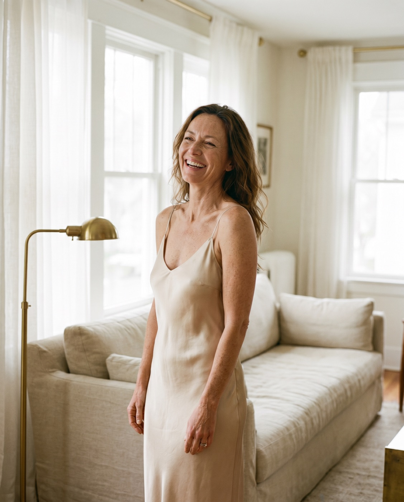
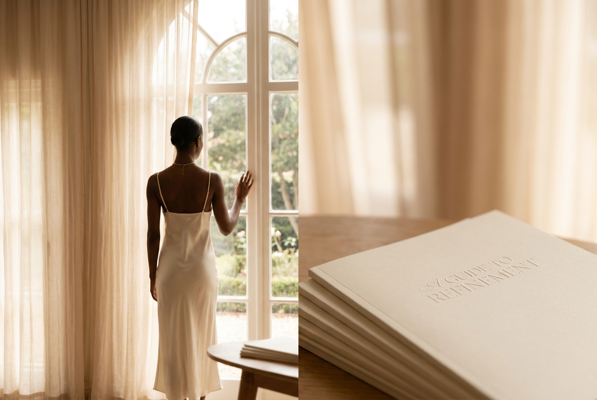
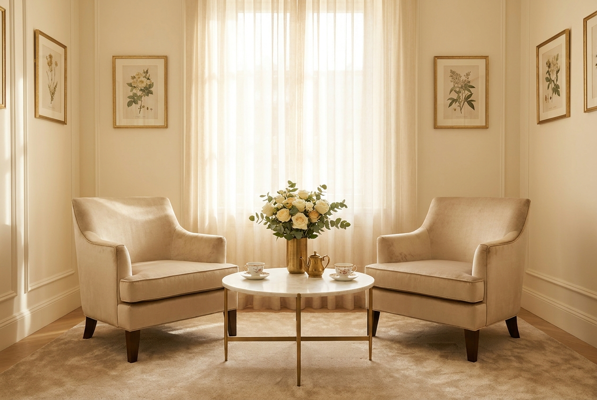

Your first two weeks after surgery
What to expect day by day, how to rest well, and the small habits that help you heal calmly and comfortably.

Considered guidance on surgery, recovery and aftercare, written to inform and reassure, never to sell. Knowledge is the first step of any good decision.
The single most important decision you'll make isn't which procedure, it's who performs it. From verifying GMC registration and FRCS(Plast) accreditation to asking the questions that really matter, a clear-eyed guide to choosing well.
What to expect day by day, how to rest well, and the small habits that help you heal calmly and comfortably.

Understanding the differences, and how Mr Vijayan helps you find the option that genuinely suits your frame and your goals.
The art of subtle facial rejuvenation, why the best results are the ones nobody can quite put their finger on.
Evidence-led advice on massage, sun protection and patience, and how good scars are made in the months after surgery.

Inside an unhurried 20–30 minute consultation, what we discuss, what we assess, and the written plan you'll take home.

Restoring shape and confidence once the weight is gone, how contouring refines loose skin to reveal the physique beneath.
The best answers are personal. Ask Mr Vijayan directly, enquiries are answered within a day.
Request a Consultation